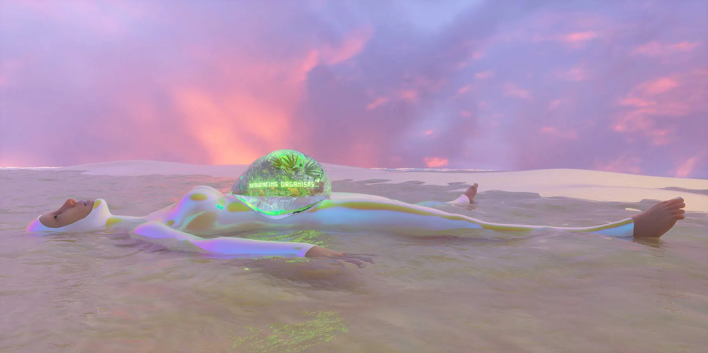
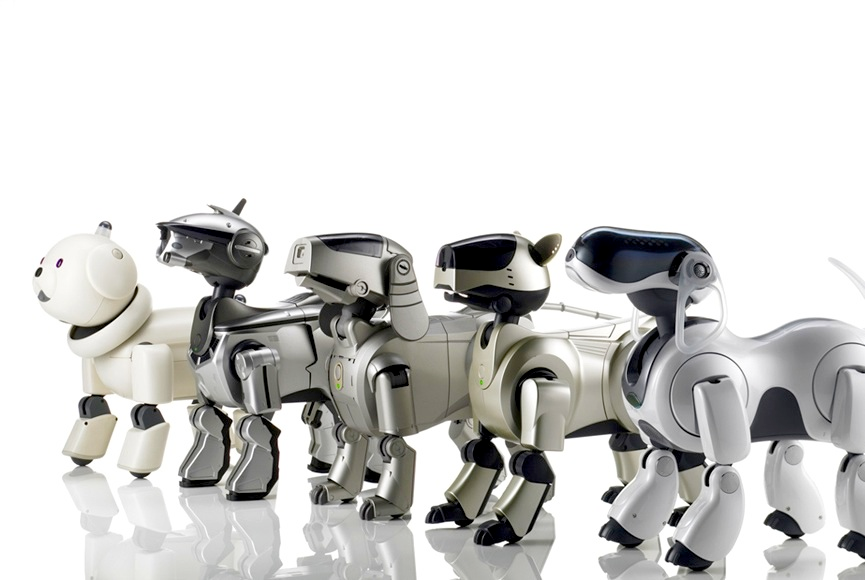
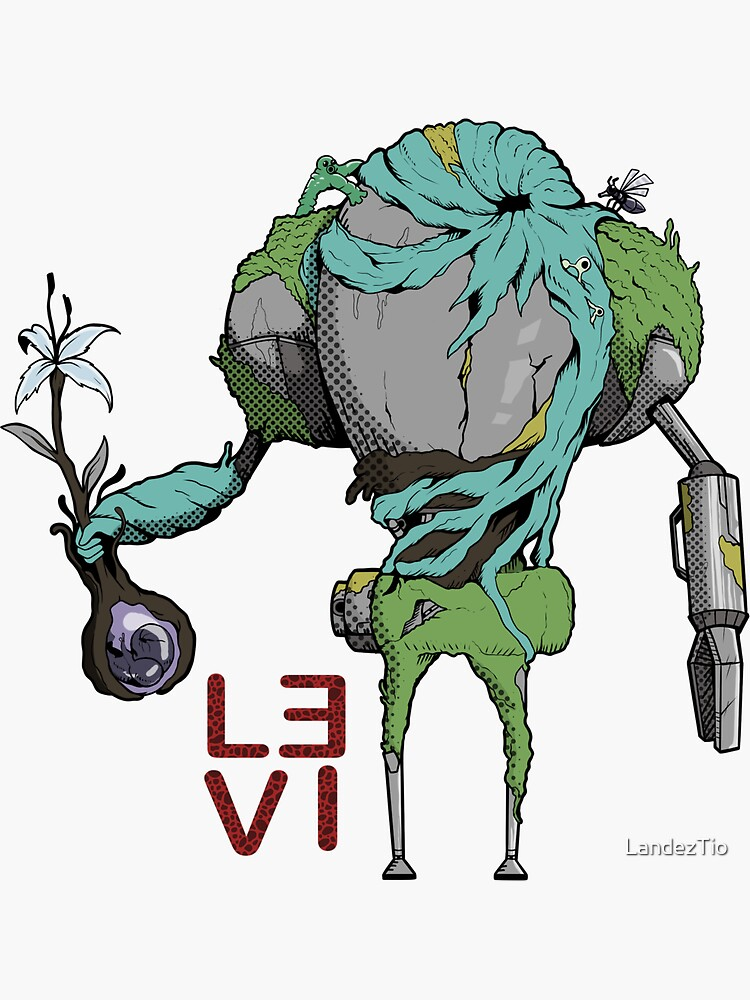

Ecotechnoaesthetics
I am using ecotechnoaesthetics as a provisional term. It names an aesthetic position where nature, humans, and technology are not treated as separate domains. The point is not to say that technology saves nature. It is to stop treating technology as something that arrives after nature, outside it, or against it.

Starting Point
Western environmental aesthetics and ecocriticism often try to correct a problem while keeping part of the structure that produced it. They ask how humans should value nature, preserve nature, or learn to appreciate nature correctly. But the scene often stays divided. There is a human subject, there is an environment, and the subject has to learn the right relation to it. 1, 2
I do not think this makes Western environmental aesthetics useless. It gives us real questions about ecological knowledge, preservation, attention, and aesthetic judgment. The problem is that ecological knowledge can become something added to aesthetic experience from the outside. The world is first seen as scenery, then corrected by science, ethics, or conservation.
This can produce strange results. Some environments are protected because they look like nature should look. Other environments, which may be ecologically important but ugly, damaged, ordinary, industrial, or difficult, become harder to value.3 The picturesque remains inside environmentalism even when environmentalism thinks it has moved past the picturesque.
Often begins with a human appreciator looking at nature as an object of judgment.
Tries to join aesthetic experience with ecological relation and human-nature unity.
Can turn nature into an ideal past, or a purer condition we are meant to return to.
Starts from the mixed condition: organism, person, machine, infrastructure, and world.
Even when the human is asked to protect nature, the human can still appear as the one who stands apart from it. Humans become the problem and also the savior. Nature becomes what must be saved. This is still a dualism, even if it is an environmentalist one.
Ecoaesthetics
Chinese ecoaesthetics is useful because it begins from a different orientation. It does not have to downgrade natural things in the same way. It tries to think aesthetic experience and ecological experience together. It also tries to join humans and nature, rather than treating humans as outside observers who must later learn how to appreciate nature correctly.4, 5
This is a real difference. It matters that the experience of nature does not have to be filtered through a detached subject. It matters that an ecological relation can already be aesthetic, rather than becoming aesthetic only when framed by a human viewer.
But Chinese ecoaesthetics is also a newer formulation. It develops partly in relation to Western environmentalism and to older Chinese environmental aesthetics. Because of that, it is not outside the West in any simple way. It becomes a bridge, and a bridge has to be readable from both sides.
The issue is not that ecoaesthetics is secretly Western. That would be too simple. The issue is that it can still inherit a Western desire for a pure nature, or for a lost harmony that modern life supposedly ruined.
This is where ecoprimitivism enters. Environmental thought can become utopic in a particular way. It can imagine an ideal version of nature to go back to, and an ideal version of the human who belongs to it. That ideal can look innocent, but it can hide another dualism: civilization on one side, and the noble savage on the other.6
Ecotechnoaesthetics does not choose either end of this line. It starts from the middle, where there is already damage, infrastructure, memory, habit, extraction, adaptation, desire, and ordinary life.
Geopolitics
The ecological question is also geopolitical. It is not only a question of what humans should feel when they encounter nature. It is also a question of production, energy, development, global power, and who gets asked to give things up.
Countries in the Global South are often disproportionately affected by climate change, while also being asked to accept limits that are easier to demand from the outside. Green policy can be necessary and still uneven. It can protect ecological futures while also carrying opportunity costs for countries that did not profit from earlier industrialization in the same way. 7
This does not mean green movements are wrong. It means the aesthetic of return is not enough. A demand to return to nature can become very convenient when made by people who already received the benefits of extraction, production, and industrial growth.
So the question changes. It is not only: how do we recover a lost relation to nature? It is also: what can we do with the relations that already exist, including relations made by ports, grids, sensors, concrete, roads, floods, devices, mines, farms, waste, and screens?
Other Relations
I do not want to claim that Japanese or Filipino cultures are ecotechnoaesthetic in some total way. That would be too large. But I do think there are impulses in both that make the separation between humans, nature, and technology less stable.
In Japanese examples, personhood can emerge through relation with things. A tool that has been used for a long time can begin to seem fused with its user. Robots can be treated as social participants without needing to be treated as biologically alive. The point is not that everything is a person. The point is that relation can produce a kind of agency or presence. 8, 9
In Filipino examples, spirits and other entities do not only belong to a premodern forest outside the city. They can appear in urban settings, vacant lots, dark streets, trees, concrete pillars, and buildings. Modernization does not simply remove them. It changes where they are encountered and how they are described.10


These examples are not all doing the same thing. Some are religious, some are folkloric, some are popular media, and some are artworks. I am grouping them only because they make the same strict separation difficult to maintain. Human, nature, and technology appear as coexisting relations, not as three clean substances.
The Term
Ecotechnoaesthetics is not an elegant word, but it is precise enough for now. It keeps three terms in the same frame: ecology, technology, and aesthetic experience. Removing any one of them makes the problem easier, but also less accurate.
Postphenomenology is useful here because it treats technology as part of how experience happens.11 A sensor, a camera, a phone, a flood map, a microscope, a vehicle, a sea wall, or an air conditioner does not only sit between human and world. It changes what can be perceived, what can be acted on, and what can be felt as environmental.
This matters for aesthetics because ecological experience today is often technologically mediated from the start. We encounter weather through apps and damaged infrastructure. We encounter animals through cameras, algorithms, fences, field guides, roads, and screens. We encounter climate through data, heat, insurance, disaster planning, and broken routines. None of these are outside nature in a simple way.
Ecotechnoaesthetics therefore refuses two easy stories. The first is the story of progress, where technology carries humans away from nature. The second is the story of return, where ecology means removing technology and going back to a better original relation. Both stories are too clean.
A working definition: ecotechnoaesthetics is an aesthetic orientation that treats ecological experience as already shaped by human bodies, technological mediation, nonhuman agencies, and material systems. It does not need to decide in advance which of these should be primary.
This is not a program for how the world should be. It is more modest than that. It is a way to describe what is already happening, and to ask what can be done with what we have.
Conclusion
Ecotechnoaesthetics may not be fully separate from posthumanism, new materialism, assemblage theory, actor-network theory, cyborg feminism, or other existing vocabularies. It may be a local arrangement of those ideas rather than a new category. That is acceptable for now. The term is useful if it names a pressure point clearly enough.
The pressure point is the mixed condition. We do not escape into pure nature, and we do not escape into pure technology. We stay with relations that are ecological, technological, human, damaged, ordinary, and sometimes aesthetically available.
Keeping technology inside the frame should not mean celebrating extraction, computation, militarization, or industrial damage. It should make those conditions harder to hide. The same applies to cultural examples. An artwork, a robot, a flood map, a spirit story, or a phone app does not prove the term by itself. It only gives a place where the relation can be tested.
This is probably where I would begin: not with an ideal nature to recover, and not with a future technology to believe in, but with the specific relations already in front of us. The task is to notice how they work, what they allow, what they hide, and what forms of experience they make possible.
References
- Carlson, Allen. "Appreciation and the Natural Environment." The Journal of Aesthetics and Art Criticism 37, no. 3 (1979): 267-275. https://doi.org/10.2307/430781. back to text
- Berleant, Arnold. The Aesthetics of Environment. Philadelphia: Temple University Press, 1992. back to text
- Saito, Yuriko. "The Aesthetics of Unscenic Nature." The Journal of Aesthetics and Art Criticism 56, no. 2 (1998): 101-111. https://doi.org/10.2307/432249. back to text
- Zeng, Fanren. Introduction to Ecological Aesthetics. Singapore: Springer Singapore, 2019. https://doi.org/10.1007/978-981-13-8984-9. back to text
- Xiangzhan, Cheng. Ecoaesthetics and Ecosophy in China. London: Transnational Press London, 2023. back to text
- Cronon, William. "The Trouble with Wilderness; or, Getting Back to the Wrong Nature." Environmental History 1, no. 1 (1996): 7-28. https://doi.org/10.2307/3985059. back to text
- IPCC. "Summary for Policymakers." In Climate Change 2022: Impacts, Adaptation and Vulnerability, edited by H.-O. Portner, D. C. Roberts, E. S. Poloczanska, K. Mintenbeck, M. Tignor, A. Alegria, M. Craig, S. Langsdorf, S. Loeschke, V. Moller, A. Okem, and B. Rama, 3-33. Cambridge: Cambridge University Press, 2022. https://doi.org/10.1017/9781009325844.001. back to text
- Bird-David, Nurit. "'Animism' Revisited: Personhood, Environment, and Relational Epistemology." Current Anthropology 40, no. S1 (1999): S67-S91. https://doi.org/10.1086/200061. back to text
- Jensen, Casper Bruun, and Anders Blok. "Techno-Animism in Japan: Shinto Cosmograms, Actor-Network Theory, and the Enabling Powers of Non-Human Agencies." Theory, Culture & Society 30, no. 2 (2013): 84-115. https://doi.org/10.1177/0263276412456564. back to text
- Cervantes, Carl. "Deep Ecology, Nature Spirits, and the Filipino Transpersonal Worldview." International Journal of Transpersonal Studies 42, no. 1 (2023). https://doi.org/10.24972/ijts.2023.42.1.1. back to text
- Ihde, Don. Technology and the Lifeworld: From Garden to Earth. Bloomington: Indiana University Press, 1990. https://iupress.org/9780253205605/technology-and-the-lifeworld/. back to text